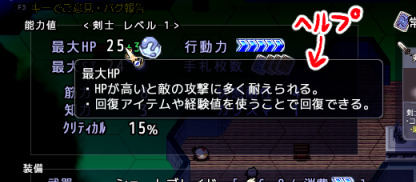
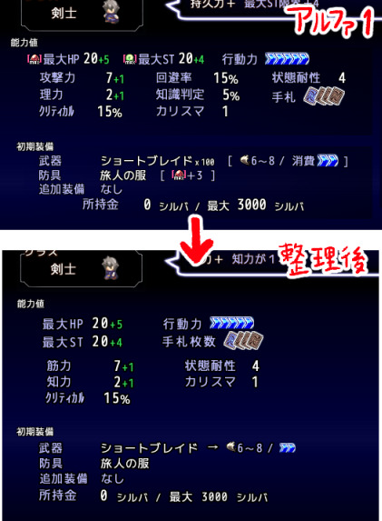
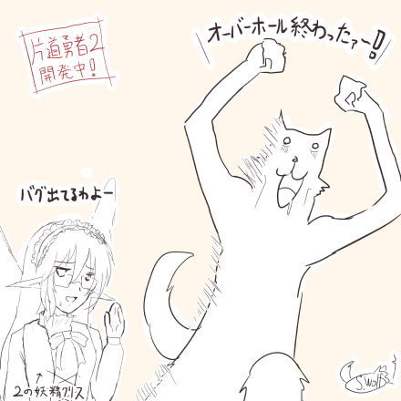
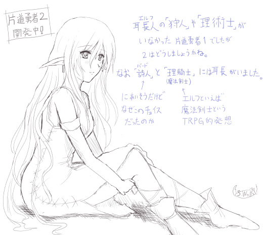

シルバーセカンド開発日誌
■
2018-07-07 (土) 片道勇者2【24】ヘルプとパラメータ▼【片道勇者2 ヘルプ機能とパラメータ】
今週はウディコンの準備やら色んな問題への対応などに追われつつの開発となりました。
『片道勇者2』は、とても地味な部分ですが、
カーソルを合わせたときに出てくるヘルプ機能を実装したのと、
パラメータの整理をおこなっている最中です。
【カーソル合わせたときに出てくるヘルプ機能】

まだ入れ始めているところですが、
パラメータなどにカーソルを合わせると説明が出るようになりました。
すごく一般的に使われている便利機能であるにもかかわらず、
アルファ1には入っていなかったものです。
これを入れたおかげで、今後はゲージやパラメータを見て
「これどういう値なんだろ？」と思ったときに、
カーソルを合わせただけで直感的に調べられるようになります。
こういった「パラメータ」だけでなく、「カード」にカーソルを合わせたときにも、
詳細説明文が別に大きく表示される機能をただいま実装中です。
こうすればアイテムのどうでもいい背景説明も入れられますしね！
【パラメータのスッキリ化】
ついでに、開いた瞬間に「オエッ」と言ってしまいそうだったくらいに
文字の圧力がありすぎだったキャラメイク画面をスッキリさせるべく、
パラメータを色々削ったり並び方を整理したりしていました。

まず、基本パラメータを11個から9個に削減しました。
リストラされたのは「回避率」と「知識判定」の2つです。
（ここからまた1個くらい増えるかもしれません）
「回避率」は元々そんなに上がって欲しくないパラメータでして、
前作『片道勇者1』でも成長で伸びるのは
最大40％（30だったかも）と制限をかけるほどで、
伸びきった後の扱いに悩む数値なので、
この際ですから成長対象からはぶくことにしました。
今後は基本の敵の命中率を100％→85％などに下げてアルファ1と同等の感触にし、
なおかつ回避率を上げられるのはカード効果や特殊効果のみにします。
「知識判定」は、今回のシステムだとこれ以上の不確定要素は
いらないと判断して完全にボツにすることにしました。
「いるかいらないか分からない謎の装備」を色々持ち歩くというのは
今回のシステムだといまいち合わないと思うので、
不確定アイテムは基本的に出さない方向で考えています。
そしてここからスッキリ化を目指すべく、パラメータ2つの削減に加えて、
常時出さなくていい「固定値」の情報は
カーソル合わせ時のヘルプに放り込むことにしました。
「武器の攻撃力」のように、「特徴の選択によって
変わりやすいパラメータ」だけは表に出しておいて、
それ以外は通常は見えなくしています。
装備はカーソルを合わせることで、耐久度なども含めた詳しい性能を見られます。
それと、これは名前の変更だけですが、旧「攻撃力」は「筋力」に、
旧「理力」は「知力」という名称に変わる予定です。
「筋力」は「（カードに書かれている）物理攻撃の攻撃力」に補正が付く、
「知力」は「フォースの威力やアイテム使用時の効果が上がる」という言い方にします。
後者は特に、理力で爆弾の威力が上がるのも何か変ですしね。
なお、アルファ１では「攻撃カードに書かれている値（６～８とか出てるアレ）」を
「ダメージ」と呼んでいたのですが、ダメージというと
「攻撃力から敵の装甲も引いた最終値」っぽくてまぎらわしかったので、
今後は「攻撃カードに書かれている白い数値」を「攻撃力」と呼ぶようにする予定です。
なのでさらにその下にあるパラメータを「筋力」に変えたわけですね。
といった感じで、今はこういった部分をいじっています。
今後も引き続き、根っこのあたりの機能からいろいろ修正していきます。
それと、約2週間後の7/22から第10回ウディコンが始まります！
それにあわせて、このサイトでも全作品のセールを行う予定ですので、
過去作品が気になっていた方はよければそのときにぜひどうぞ！
というわけで、ウディコン準備も片道勇者2開発もその他のことも引き続き、
全力を尽くして進めていきます。 ■
2018-06-30 (土) 片道勇者2【23】 オーバーホール▼【片道勇者2 オーバーホール仮完了！】
ボタンをクリックしたらスクロールバーが飛んでいっている画面を見ているウルフです。

なんだかんだで一ヶ月くらいかかった気がしますが、ようやく
『片道勇者2』のオーバーホール作業が一通りざっくり完了しました。
バグは全部直っていません。今月主にいじった内容は以下の通りです。
・カードの表示処理の高速化 （必要最低限しか更新しないように修正）
・カードの内部整理処理 （処理数の削減）
・テキストスクリプト処理 （スタート時に前処理してプレイ中の処理を大幅削減）
・マップ表示処理 （必要最小限しか更新しないように修正）
・ボタン処理の高速化 （必要最低限しか更新しないように修正）
処理のパーツを抜き出して作り直す作業は
地味なわりにびっくりするほど大変でしたが、
おかげでゲームの処理負荷が全体的にざっくり2倍以上、
部分的に3倍以上速くなりました。
これによってようやく少しの処理の余裕が出たので、
今後の追加要素、たとえば片道勇者1にもあった
「状態効果」などの処理も何とか入れられそうです。
もちろん大規模な修正を加えた代償として、
動かせば動かすほど新しいバグが発覚する状態なのでそれも直していきます。
【次は？】
ここからは新しい機能の追加に入っていきます。
ひとまずチュートリアル問題の解決の一手として、
「カーソルを合わせるとヘルプが出る機能」を搭載したいと考えています。
ボタンだけには搭載されていましたが、カードや画像には実装されてなかったんですよ。
その機能でたとえば何ができるかというと、
「パラメータの説明」などを出すときなどは、
「そのパラメータにカーソルを合わせると説明が出てくる」方が
直感的でよくなりますし、常時表示する説明も減らせるはずです。
アルファ1ではその辺サボったツケで、説明の出てくる場所と
実際の要素を見られる場所が遠かったりして分かりにくい、
ないし説明の量が多すぎ！ というご指摘をいただいてしまいました。
このご指摘は非常に真っ当な内容なので、早めにカーソルヘルプ機能だけでも搭載して、
気付いたところに細かく説明を出せるようにしていきたいと思います。
ということで、今後はこんな感じインターフェース部や、
ゲーム内容部分に調整を加えていきます。
オーバーホール作業はゲッソリしてましたが、この辺りから楽しくなってきそうです。
以下は気になったコメント返信です。
皆さまのコメント、いつもありがとうございます！
＞安易に眼鏡を装着させられないお話、分かりすぎるくらいに分かります！
＞（中略）その世界の文明発達レベル？との不整合についていろいろ
＞考えてしまってこわくて登場させられなかった……。
＞私が好きな時代ものの小説では、貴重な老眼鏡を失ってしまった主要登場人物が
＞新たな老眼鏡を手に入れるまでものすごく不自由したエピソードが書かれていて
＞（のっぴきならない調べ物があるのに本が読めない）、そうか、眼鏡ひとつで
＞こうなるのかーと衝撃で、「これは安易に眼鏡は登場させられない……」
＞という思いを新たにしたりしました。
これは参考になるお話をありがとうございます！
メガネが手に入りにくい世界だと、
こういうエピソードがあるのが自然なのだと思います。
文明レベルが違うんだなー感を出すのにも便利そうです。
＞片道勇者2アルファ版を遊んでからドミニオン的な要素を取り入れたゲームの
＞面白さに興味が出て来るようになりました！その中でも「Slay the Spire」 という
＞ゲームはローグライク＆ドミニオン的なゲームで、片道勇者2と同じ思想を持って
＞作られたように感じられるゲームです。是非とも一度拝見なさると
＞参考になるかと思います！今ならサマーセール中です（ダイレクトマーケティング）
ウワサを聞いていたので、Slay the Spireはアルファ1公開後に
勉強のためにプレイさせていただきましたよ！
うちの作りかけと違って、デッキ構築型ゲームとして無駄のない造りをしていて
一つの完成形としてまちがいなくすばらしい一作ですので、
ぜひ皆さまにも遊んでいただきたい一本です。私も見習います！ ■
2018-05-05 (土) 片道勇者2【22】 妖精クリス▼【片道勇者2 妖精クリス】
アルファ版のゲーム終了画面でチラっと出ただけで
この開発記事では何も紹介していなかったので、
今回は改めて『片道勇者2』のアドバイザーキャラ、
「妖精クリス」の紹介をさせていただきます。
前作のアドバイザー「妖精イーリス」は元気系なイメージでしたが、
今作の「妖精クリス」はメガネを着けて本を持ちいつも何か書いている、
少し物知りそうな見た目の妖精となっています。
所持品は＜自家製＞片道勇者TRPGリプレイの妖精PC「アレイラ」さんに近い感じで、
最終デザインが過去に作ったキャラと近い感じになったので
『シルフェイド見聞録（未完結）』から「クリス」という名前を拝借しました。
（※『シルフェイド見聞録』で登場したのはクリスティーナ）
しゃべり方はある程度似せつつも、多少は人なつっこい感じになると思います。
「妖精クリス」は前作の妖精と同じく邪魔にならないポジションを維持しつつ、
前作よりは多少は存在感を出したいなと考えています。
前回の妖精イーリスはほぼ一番最後にアドバイザー役として突っ込んだので、
あんまり他のキャラと絡んだりもしないしセーブ役まで女神様に取られてるしで
イベント面ではいいところがなかったですからね。
（後に仲間になるようにはなりましたが）
「ゲーム面での実用的なサポート」という機能を持たせられれば
一緒にがんばってる感もほんのり出せると思うので、
今回はその辺も少し意識したいところです。
見た目的に、まずセーブ機能（かチェックポイント機能）あたりは
たぶん担当することになりそうな気がしますね。 ■
2018-04-28 (土) 片道勇者2【21】アルファ1テスト、一旦終了！▼【片道勇者2アルファ1テスト、一旦終了！】
ということで、パッチで直せそうなバグと再現方法が分かるバグに関しては
一通りの修正が完了いたしましたので、
現時点でアルファ1テストの一旦の仮終了を宣言させていただきます！
（細かなバグが見つかった場合はまだ直します）
ここからはアルファ2に向けての、まとまった修正作業に入っていきます。
アルファ1テストでの900件以上にもおよぶ皆さまからの
たくさんのフィードバック、本当にありがとうございました！
片道勇者2アルファ1より「妖精クリス」
そんなわけで「アルファ2に向けて改善していきたい点」
（と、すでにおこなってみた対策）を以下に整理してみました。
主要な問題点はだいたいこんなものかなーと考えていますが、
もし何か思いついた方は今からでもお気軽にフィードバックをお寄せください。
アルファ2公開まで、ゲーム内のフィードバック機能はそのまま稼働させておきます。
◆アルファ2に向けて改善していきたい点
●大きな経験値が来たことに気付かず、よく見逃してしまう。
●最初、経験値が取れることが分からなかったので全部流してしまっていた。
→ アルファ1中のバージョンアップで「経験値自動取得機能」を実装しました。
一定以上の経験値が流れそうになったら自動で手札に回収する機能です。
これでひとまず、よく分からない人でも経験値の回収ができるようになったり、
または大きな経験値を見逃すことが減ると思います。
●序盤の説明がイマイチ。必要な情報が提示されない。初見での情報量が多すぎる。
（経験値を取れることに気付かない / レベルアップの方法が分からない /
高い経験値を得るための方法に気付かない、あたりが特に致命的）
→ 初見で分かりにくい、情報量が多すぎ、情報が足りない！ 分かります。
ということでバージョンアップでExpゲージに
コンボ状態であることを示すようにしたり、
経験値自動回収を入れたりして、暫定で分かりやすさを少し増すようにしてみましたが、
まだまだ小手先の対応にしかなっていないと思います。
本番では「専用チュートリアル」を用意したり、あるいは
「新たな要素を使ったり新たな画面を開くごとにアドバイスが出る機能」を入れたり、
とにかく適切なタイミングで少しずつ学べるガイドが必要だと考えています。
→ また上記以外にも、「カーソルを合わせると表示される情報」を
うまく入れれば平時に出す情報も減らせると思うので、それらも活用して
もう少し画面全体をスッキリさせたいと考えています。
→ 説明文がすでに多いところは、ヘルプ内容「ノーマル」「マニアック」の
ヘルプ切り換えオプションのようなものを設けて、
詳しい情報を出すか出さないかを選べるようにしたいですね。
そして慣れたころに「マニアック」に切り換えるかを聞いてくる感じで。
→ 初心者さんがハマりやすい「経験値・アイテムカード取りすぎで戦闘力低下」
になっている状態をより把握しやすくする工夫を取り入れたいと考えています。
アイテム購入時や回収時に「各所有カードのゲージとスキルカード％」が出てて、
アイテム多すぎたならその下に「戦闘力低下！（アイテム・経験値の廃棄を推奨）」
と出してしまうとか、何かしらデッキの状態を把握できる工夫がいりそうです。
→ レベルアップに関しても必ず気付ける対策が必要だと思います（1つ下に記述）。
●レベルアップが可能か常に手札に気配りしていると、進行のテンポが悪くなる。
●レベルアップできるチャンスを見逃してしまう。
→ レベルアップは戦闘中によくチャンスが来て
テンポよく戦ってると流してしまうので、
「成長を予約しておいて、条件を満たしたら自動でレベルアップ画面に移る機能」や、
「落ち着いた場所でのレベルアップを推奨する要素」などを作りたいと考えています。
後者の「落ち着いた場所でのレベルアップ」は、「キャンプ地」みたいなマスを作って、
上に乗っての「引き直し」が10回まで完全ノーコスト（時間も経たない）になり、
その間の「引ける手札が＋1」される、みたいなのがあれば、
定期的なレベルアップやアイテム整理地点として役に立つかもしれません。
→ また、最初は「強制的に次の目標レベルアップ対象を選ばせて予約する」
くらいにしないと、何も読まずに始める方が
レベルアップ画面の存在をスルーしまう可能性が高いので、
「レベルアップ機能の存在感」をよりハッキリさせるのは重要そうです。
●手札に来ないとアイテムが出せないので、「取引」時や「回復・装備変更」時などで
必要なものを出すためにすごい回数の「引き直し」を行う作業が発生して面倒。
→ 「取引時」の売却に関してはもう
「任意のアイテムをすぐ売れていい」と考えています。
これは後述の「売却アイテムの消滅」と合わせて導入予定です。
→ 「取引時以外」の状況での「好きなアイテム取り出し」は、
「戦闘中に行うのは難しい（＋少しコストもかかる）」という制約を持つ、
好きなアイテムを1つまで手札に呼び出せる「アイテム取り出し」機能を
作ってみようかなと考え中です。今のところは基本機能としてどのクラスでも
使うことができ、「特徴」で最大強化すればギリギリ戦闘中でも使える、
くらいのバランスをイメージしています。
※「売却アイテムの消滅」とは
今作では面倒臭い最適化ができてしまうため
「アイテムを落とせないようにした」のですが、
「取引」処理で「アイテム入れ換え」できるのも無数の面倒臭い裏技ができそうなので、
次の「売却」処理は「捨てる」コマンドに
「換金」機能を足した扱いに変えようかなと考え中です。
（つまり売ったものが消滅し、売った相手を倒しても
「自分が売った品物」は落とさない）
基本的に「アイテムが消えていく」ような方向にしないと、
手持ちのアイテムがたまりすぎるのもありますしね。
●スペシャルカードを手に入れるのが大変すぎる。
●（小さい）経験値を大きな1枚に合体させられるアイテムや機能が欲しい。
→ 経験値合体のご要望もスペシャルカードが
入手できないことに起因するものだったのか、
「レベルアップごとにスペシャルカードの必要経験値がレベルアップごとに減少」する
バージョンアップをおこなった後はこのご要望の頻度がほぼゼロになりました。
が、将来的なバランスを考えるとやっぱりこういう機能は必要ですよね。
この「経験値を1つに合体させる機能」自体は、攻撃力が低いクラスのプレイや
後半で「相対的に敵が強くて連続で倒しにくい」状況だとかなり役立ちそうなので、
「女神像」の「願い」で小さい経験値をまとめたりできる予定です。
「経験値融合アイテム」もよさそうです、上の「自由なアイテム取り出し」と
合わせれば、所持カードの圧縮もできてほどほどに便利そうですしね。
●初めてのプレイで「騎士」を選ぶと攻撃できないストレスがたまりすぎる。
●デッキ構築の意図を理解できないと運ゲーにしか見えなくて辛いので、
もっと安定性や狙いを持てるプレイ手段も欲しい。
→ 今回は「騎士」は常備攻撃系のカードを持っていませんでしたが、今後は
「騎士含む前半のクラスにはほぼ攻撃系スキルを常備させる」ことを考え中です。
そしてはずしたい人には、序盤に取れる特徴で「常備カード」をはずせるようにします。
※さすがに2つめのクラスで「常備の攻撃」という補助輪を
はずすのは早い感触がありますし、
「攻撃カードが来なくてうまく戦えないペナルティ」は、慣れない内は
攻撃力半減（2回攻撃できる状況だけど1回攻撃しかできない）で十分すぎるでしょう。
うっかり初見プレイで常備カードなしで遊ぶと
相当ひどいゲームに感じると思いますので、
4～5クラス目くらいから常備攻撃できないクラスを解放し始める流れを考えています。
→ あと、「手札を（1枚）ロックする」機能の搭載を考えています。
手札に来た指定のカードをロックすることで
「使用するまで手札に置きっぱなしにできる」感じの機能になると思います。
「装備変更」や「レベルアップ」も少しスムーズになるかもしれませんし、
ボス戦なら手札に流れてきた「まだ使わないアイテム」をロックして後で使ったりと、
「準備」や「先の予測」によるプレイの楽しさが上乗せできそうです。
手札ロックをクラスに応じて使えるようにするか、「特徴」で使えるようになるか、
あるいは全クラスの標準機能にするかは、入れてみてから検討する予定です。
●マウス操作だと操作ミスで事故が起きやすいので要所に確認がほしい。
●簡単に闇に突入してしまうのがあまりにストレスに感じる。
●操作ミスで敵に先制攻撃されることが多いので何とかしてほしい。
●まちがって（敵の隣や闇の横で）待機してしまうことがある。
→ 「うっかり闇に突入してしまう」
「遠くの移動先を選んだときに敵に攻撃されてしまう」
「まちがって敵が隣にいる状態で待機してしまう」の点に関しては、バージョンアップで
敵が近いと移動が止まったり、待ちゲージを付けたりすることで対応してみました。
※「敵が近くにいると1歩ずつ止まる」などに関しては好みの差があるようなので、
止まる条件をオプションで何段階か切り換えられるようにした方がよさそうですね。
→ まだ同様の「まちがって武器を投げてしまう」などの操作ミス問題が
残っているので、引き続き対応していきます。
投げるときも常にゲージ待ち（オプションで切り換え可）でいいかもしれません。
「エルザイト爆弾」みたいな、投げる方向を間違えると大変なアイテムもありますし。
●（育成が失敗したときに辛いので）スキルカードを捨てたい。
→ スキル廃棄（売却？）を将来的に
「女神像」の「願い」でおこなえるようにする予定です。
「取ったけどあまり活用できなかったスキル」をはずすのにも使えますが、
将来的なバランスとして、育成の最終段階ではデッキに「攻撃」カードが
ほとんど入らないくらいにスキルが入れ替わる可能性も考えています。
そうなる場合は大技のスキル演出をさらにテンポよくしたりする必要があるでしょうし、
ST消費技だらけになるでしょうから「最大ST」の下限を「0」でなく
「限界値の1/4」くらいに引き上げるなどの調整も必要かもしれません。
（最大STの下限を「限界値に比例する」ようにするのは、レベルアップで
最大ST限界値を上げる重要度がより強くなるので面白いかもしれません）
●自動戦闘で使いたくないスキルのオンオフを切り換えたい
→ これもご要望が多かった点です。
「大激震」など普段は使いたくないスキルなどもあるため、
「自動戦闘のオンオフ機能」はぜひ入れたいと考えています。
あまり画面を増やさない方向でいくなら、
たぶん「所有カード一覧」でセットすることになる気がします。
●いろいろアイテム持ちたいんだけど必要最低限しか持てないのが辛い。
●本編ではアイテム集め的なプレイができなさそうで不安。
→ いっぱいアイテムを持ちたい人や、コレクションしたい人向けの特徴や
機能などを搭載することを考えています。
「所持アイテムを一定個数までロックして手札に回ってこないようにする」とか、
そういう能力があればアイテムを持ち歩いていても邪魔にならない気がします。
それを「カバン」と呼ぶことになるかもしれません。
→ また、ゲーム内でアイテムを預けられる「ミニ次元ボックス」という感じの要素も
実装予定です。「使わないけど倉庫に入れたいもの」を一足先に入れられたり、
「今すぐは使わないけど後で使うかもしれないもの」
を出し入れできるものになる予定です。
どこでも出せないだけで、これも所持アイテムのロックと同じ考え方ですね。
●現状、屋外ではトレイン（敵を引き連れる）が最適解なのは気になる。
→ ある程度はトレインを許容する立場ですが、
もともとは敵から逃げられない問題への対策として
「敵が一定ターンで追跡をあきらめる」機能を搭載予定でした。
まずこれを入れてどうなるか検証するところから始まると思います。
あと敵に接頭辞が付いたり、距離に応じた敵種類の強化がおこなわれるとまた
バランス的に変わってくるかもしれません。次Verでは敵種の強化を入れたいですね。
→ その他、アルファ1でも経験値1、2点が流れても最大STが回復するようにして
屋外戦闘を回復に使える感じにできないかなど色々やってみていますが、
このほかにも余裕があれば「特徴」などで、移動時の散発的な戦闘の経験値を
無駄にしたくない人への配慮を導入できないか検討したいと思います。
→ 「もっと敵を集めたいので敵の反応範囲を上げる特徴などがほしい」
というご意見もいただいているので、そういった「特徴」も入れていきます。
●（未実装だが）「アイテムの鑑定」要素いらないのでは。
→ 私もこれ思ってて、アルファ1を遊んでいる限り、これ以上に
不確定要素があるとゲップが出そうなので
未鑑定アイテム要素はいらないよなーと感じています。
あと、このシステムだと「不要か分からないアイテムを持つ余裕がない」ので、
「アイテムを持ちすぎない方がいい」という推奨プレイ的にも
噛み合わせがよくない気がします。
→ もし鑑定っぽい要素を入れるなら別の形にした方が面白そうです。
たとえば不確定アイテムは出ないけど、鑑定力が強いクラスは隠された性能を見抜いて
「拾った装備に特殊な付与がランダムでさらに増える」みたいな「特徴」や
「クラス特性」などを入れることで、鑑定と似た雰囲気を出せそうな気がします。
こんな風に、「アイテムを不確定にする」というマイナス要素でなく、
「うまくいけばプラスに伸びる」という方向で鑑定を搭載するなら
面白いかもしれません。あくまで案ですけれどね。
●その他、細かなインターフェース・機能向上についての検討・導入。
- 装備変更時の、前後性能の比較表示
- 回収画面や取引画面でカード一覧を開ける機能
→ カード一覧から捨てたり売れたりできれば便利そうです
- 各種インターフェースをオンオフするオプション
- 移動時にも自動攻撃できるか否かの表示を分かりやすくできる機能
→ 自動攻撃できない場合は常に「X」とか出してもいい気がします
- カード欄をもう少し小さくできるオプション
- そもそもの各UI・ボタン位置の再検討
- お金をサイフ限度以上に取らないオプション
→ 「所持金」の横にロックボタンでも付けたいです
- 武器も即座に分解できるように
- スクロールが酔いやすいので対策オプション付けるか調整
- 所有カード一覧からでも装備を外せるように
- 遠くでのNPC同士の戦闘を高速化する
- マップの縦幅（斜め幅）をもう少し広くする
（施設の場所を教えてくれる機能とセットで）
- キーボード・ゲームパッド対応も徐々に進めます
- 最終資産をメインの評価からはずして称号に移動
→ アイテム持ちすぎを誘発しそうなので扱いを小さくします。
- その他、要望リストから搭載可能なものを取り入れ
以上、こういう感じのことをざっくり考えています。
このうちどこまで実現できるかは、私の能力とかけられる労力次第ですが、
引き続き、マイペースに開発を進めていきたいと思います。
今後もこの開発日誌で『片道勇者2』開発に関する情報を発信していきますので、
もし興味を持ってくださった方がいらっしゃいましたら、
よければ思い出したときにでもお越しくださいますと幸いです。
（基本はTwitterアカウントの情報発信が主ですので、細かい情報も
ご覧になりたい場合はこちらをフォローしていただくのもいいと思います。
→ ◆SmokingWOLF Twitterアカウント ）
ということで引き続き、アルファ2に向けて開発を進めていきたいと思います。
アルファ1テストへの皆さまのご協力、本当にありがとうございました！ ■
2018-04-21 (土) 片道勇者2【20】 3週間 ver0.327▼
ということで、アルファ1公開から約3週間になりました。
皆さまからのフィードバック、誠にありがとうございます！
今週もバージョンを4つ上げましたが、今週やったほとんどはバグ修正でした。
ほとんど何の情報もないのも残念なので落書きを一枚！
ヘルプが何もないよりはマシだろうということで置かれたガイドお姉さん、無駄にケモ耳
【今後の予定】
そして今後の予定ですが、来週頃にはいただいたバグ報告のうち、
いま直せそうな分がほぼ修正完了しそうなので、
それらが一段落した時点で「アルファ1テスト」をひとまず
終了とさせていただくことになると思います。
といってもアルファ1のファイル自体はそのまま置いておきますし、
アルファ2が出るまではフィードバックやバグ報告もそのまま可能です。
オンライン更新だけをしばらく停止して、
まとまった機能追加や調整を行う作業に切り替わる感じですね。
皆さまからのたくさんのご要望、ご意見をいただいたおかげで、
足りないものや、配慮が必要な部分がどこなのか、
だいぶ明らかになってきました。
次は皆さまからのご要望を整理して、より遊びやすくなるよう、
アルファ2への改良点の検討と開発を進めていくことになると思います。
抜本的にいじる必要がある部分も要所要所にありそうなので、
よかった部分はうまく維持しつつ、この機会に色々考えてみたいですね。
【今週のVer0.324～0.327(4/21)までの修正点】
今週はバグ修正がメインだったので、プレイに関わる修正は以下のみです。
●敵が隣にいるときに「待機」をしようとした際はゲージ待ちするよう修正
●「待機」すると一瞬タイマーのような表示が出るよう修正
（ターンが進んでいるのが分かりにくかったため）
→ 待機するとこんな感じのが出ます。
●「ギガントプレート」の装備・装備解除直後に行動力が変化するよう修正
●シルバの回収速度をオプションの「ゲームウェイト」に応じて変えるように修正
●「強打」「圧力強化」「大激震」の使用後の待ち時間を減少
●HP・STの次の回復量をゲージ側に＋？で出すよう修正
→ どれだけのSTを使えるか分かりやすくなります。
この表示のオンオフは将来的に切り換え可能予定です。
●経験値やアイテムを捨てるときにウェイトがかかっていたのを撤廃。
●所有カード限界超過のデバッグ用に、最初の施設の左上に
石ころが20個詰まった箱を3つ設置(4回目以降の冒険で出ます）。
→ カード限界時の問題がまだあるようなので、そのテスト用です。
●ホイール回転量が内部的におかしくなっても平気なように、
一定時間同じホイール変化量ならそれを基準値にする機能を
追加しましたがうまく動かないようだったので撤廃しました。
→ タッチパッドのホイール周りで妙な挙動をするようです。
問題が起きるタッチパッドのタイプがお分かり（お持ち）の方が
いらっしゃいましたら、その型・ソフトなどご一報下さるとうれしいです。
●スクロールバーを押している最中のY軸挙動が変になりにくいよう調整
（それでも動かし方によっては少し変になります）
◆その他、バグ修正36点。
ということで、引き続き開発を続けていきます。■
2018-04-14 (土) 片道勇者2 ｱﾙﾌｧ1【19】 ver0.323まで▼
ということで今週も引き続き、できる部分の修正作業中です。
『片道勇者2アルファ1』の今週の主な修正点（バグ修正除く）は以下の通りでした。
この辺りから修正の地味さがますます加速していくと思います。
●アイテム回収画面を調整しました。
- アイテムを全て拾ったら自動的に閉じるように修正。
- ボタンは「全部拾う」ボタンと「拾わず終了」ボタンの2つに変更。
- 回収画面の文章を修正。
- 手札に入らないアイテムを取った場合は次の山札に入るように修正。
→ 回収画面を「落ちてるものを自動回収した確認画面」と
誤解してしまっている人が出たので「完了」ボタンを「拾わず終了」に
書き直したり、閉じる操作のクリックを減らすようにしたり、
「全て拾う」ボタンを追加したりしました。
●「癒しのアンプル」の消費行動力と、武器・防具・追加装備の
「装備」・「装備解除」・「分解」の消費行動力を「0」に変更しました。
→ 減った行動力が移動で回復しない＆装備変更できなくなる場面があるのが
直感的じゃないのに加え、アンプル使用などを検討するときは
行動力は判断に入らないと思うので、行動力の消費をなくしてみました。
が昨日のVer0.323までうっかりアンプルの行動力消費が残ってました、すみません。
●クラス画像の「タイプC」は未実装であることを示す文章を追加
●画面中央システムメッセージの「数字」が重なって読みにくかったので微調整。
●闇の近くで2マス先を選んでいるとき、闇に突っ込んでしまうことがあったのを修正。
●闇の中に入ってしまう移動をしそうになった場合は
「山」等への移動と同じくゲージが出るように修正。
→ ゲージ待ち機能が付いたので、かなりザツに動いても闇に突入しにくくなりました。
【映像】 闇に入る移動をするときはゲージ待ちになるように
●奇数点の経験値を流したときも、天に捧げられた累計点が偶数点に達するごとに
最大STが追加で1点回復するよう修正。
→ これは要するに、経験値1点を回収して2つ集めて最大ST回復に使う
最適行動を取ると面倒臭くなってしまうため、それなら
ゲーム側で最初からやっておけばいいじゃんという話ですね。
●装備変更時の残り行動力表記が不要になったので削除。
●レベルアップ時の「XX％OFF」部分が目立たないので試しに黄色に変更。
●経験値ゲージが10に到達したら「コンボ終了ターンまであと1（＝自動取得まで0）」
になってすぐ取れるように修正（ゲージ増加速度も速めるように）
※すでに何かの経験値カードがストックされていた場合は「Exp10」に
なった瞬間に自動回収されます。
●「自然治癒」の「[自動発動]」表記を「[引いたとき]」に変更。
修正後は「[引いたとき] STを2消費しHPが最大値の12％回復」に。
→ 説明文が紛らわしいというか正確な表現になっていなかったところです。
こういうところをうっかり残してしまうことも多いので、
バリバリご指摘いただけると助かります。
●カードの当たり判定順を、より上のカードを優先するように修正。
（これまでは下のカードが優先されてしまっていましたので
カードが半分重なったときなどの当たり判定が変でした）
という感じでした。
こんな感じの細かい修正は今でもやれますが、こういった
「できる範囲の細かい修正」が済んだ時点で「アルファ1」テストは一旦終了し、
「アルファ2」に向けての割と大きめな修正を行っていくことになると思います。
複数の機能が関わる修正は一気に作らないと大変なことになりますから。
ご感想を拝見した限りでは、内容に合う人や自力でゲームの意図を理解できた方、
すでにこのゲームと似た遊び方を知っておられる方には、
現段階のものでもいくらか楽しんでいただけるものになっているようですが、
まだ拾えそうな範囲の方々がすごい勢いで
こぼれていく内容であることも間違いないので、
「アルファ2」ではそういった方々向けの修正を重点的に取り入れたいと考えています。
どういう点が合わないか、貴重なコメントをくださった皆さまには
本当に感謝の限りです。
アルファ2ではたとえば、「分かりやすさの向上」や、
「目配りせねばならない部分の減少」、
「いくらかなじみのある範囲に近い遊び方から始められるような配慮」、
そういった部分を強化していくことになると思います。
もちろんそれと同時に、今の楽しみ方も大事にする形で作っていきたいです。
ということで引き続き、しばらくは細かい修正作業を行っていきます。
今はもっぱら、原因究明が難しいバグの対応中です。■
2018-04-07 (土) 片道勇者2 【18】アルファ ver0.319まで▼
ということで、『片道勇者2アルファ1』を公開してから6日になろうとしています。
【片道勇者2アルファ1特設ページ】
（公開終了）
まず最初に、たくさんのフィードバック、本当にありがとうございます！
4/1の12:30リリースから今までにいただいた
バグ報告、ご要望、ご感想は650件に渡り、
やっと400件くらいチェック完了したところです。
引き続き、修正もしながら確認を進めていきます。
熱意あるコメントをくださったり、バグ報告で再現方法までご報告してくださる方々、
他の方のプレイ動画を見ていて知った「分かりにくさ」や「不親切さ」まで
ご連絡くださった方もいらっしゃって、本当に感謝の限りです。
特にバグ報告は、「よくわからないけどこうなった！」で
全く構いませんので、どしどしお寄せください。
修正はしていますが、本当に直ったか分からないんですよ。
コメントでは「面白い！」「期待してます！」
と言ってくださる方々もいらっしゃる一方、
「システムのここが分かりにくかった」「初っぱなから情報量多すぎ！」
「予定できる要素が一切ないのが辛すぎ！」というご意見も複数いただいております。
特に「分かりにくさ」や「不親切さ」に関しては相当にひどい状況だと思いますので
その辺りを今後しっかりサポートしていくのは当然として、
「遊び方」そのものに関しても、ここから私の力で拾えそうなターゲットの方々への
配慮は随所に足していきたいと思います。
たとえば、入れたいくらかのアイテムが手札によらず
いつでも使える「カバン」みたいな要素が欲しい方は多いと思いますし、
そういう「予定通り」「計画通り」遊べる部分が今のところ一切無いのは問題だと考えています。
また、「ここが分からない！」
「動画で他の人見てたけどここで悩んでた / 勘違いしてたよ」
というコメントも今後のチュートリアル作成の
ポイント作りに役立つので本当に助かります。
今回は説明書みたいなガイドお姉さんがザツに設置されてただけでしたが、
本番に向けてまともなチュートリアルも作る必要があるはずです。
（作るのはある程度システムの最終形が固まった後になると思います）
という感じで課題が山積みで、自分で出しておきながら
「いやぁぁぁ見ないでぇぇぇ！」という気持ちでいっぱいですが、
引き続き修正を続けていきたいと思います。
【アルファ1リリース時からの主な更新点】
アルファ1が出た4/1からの主な更新点は以下の通りです。
＜新機能あるいは目立つ修正＞
●マップが従来より15％ほど広く見えるよう修正されました。
●マップ1クリックでの移動可能距離を「3→4マス」に増加。
※ただ移動可能範囲の「青く光る枠」はまだ3マスのままです。
●周囲4マス内で敵に見つかっているとき、「敵がいる！」と出て
2歩以上先の場所をクリックしても1歩ずつしか移動できないよう修正しました。
主に敵遭遇時の移動ミスや移動しすぎを抑えます。
●「経験値自動取得機能」のお試し版を実装。「オプション」で
自動的に取得する経験値の点数を設定できます。初期設定は「3点以上」です。
→ 「経験値」は基本的に一定以上なら取るしそれ未満なら取らないので、
最初から機械にやらせておけばいい話でした。
この自動取得機能は消えるギリギリまで残って最後の1ターンで回収されるので、
タイミングをはかって取りたい人も安心です。
＜バランス関係の修正＞
●ST回復量を毎ターン5％→「25％」に変更。
取ったスキルをよく使ってもらいたいので、回復量を増やしてみました。
→ 「ちょっと回復しすぎではー！？」というご意見もいただいていて、
私もややそう思う一方、実際に動かしてみるとSTの文脈が3ターンくらいで
リセットされるので気楽でいい感じもあります。
つまり、どんなにSTを使っても3歩下がればSTが最大に戻るのですが、
「激戦の中で最大3歩下がる」のはこのゲームだと
そこそこいいコストになるかもしれません。
最終的には追加要素に応じて回復量20％くらいや別の値に調整するかもしれませんが、
「もっと少なくてもやれる！」という人向けには「ST回復量縛り特徴」も付けようと考えています。
●「強打」「圧力強打」「大激震」の行動力を「攻撃+1」→「攻撃と同じ」に修正
（「強打」の行動力×4ダメージボーナスは×6に修正）。
→ これもスキルをもっと使って欲しいという意図の修正です。
上のST回復修正と合わせて、個人的になんだか微妙感があった
「圧力強打」（[50＋与えたダメージ率]％で敵を1マス押し出す）なども
かなりバリバリ使えるようになったと思います。
●レベルアップ画面で経験値を余らせた際や経験値カードが流れる際、
最大STが1点回復するための経験値量を3→2点へ変更。
→ 経験値2点級の小規模な戦闘で最大STが減りにくくなりました。
あと経験値が流れたときのメッセージが
「天に捧げられた」というものに変わりましたが、
そこに溜まった分は女神像に到着した時点で何十％かが1枚の経験値として
タダで還元されるような感じにしようと思っています。
（もちろん「小さい経験値を融合する」という「願い」も別に行える予定です）
●主人公のレベルが2上がるごとに、スペシャルカードの必要経験値が
「1」ずつ減少するよう修正しました。
→ これは要望が多かった点です。今回の機能の範囲だと、うまくやらないと
永遠にスペシャルカードが取れない状態にハマってしまう可能性があったのですが、
こういった「積み重ね」によっていずれ手が届く位置まで
ハードルが下がる機能はいいと思います。ご提案、本当にありがとうございます。
●野犬やオオカミ、カラスの探知範囲を3→2マスに変更。
●EXPゲージのコンボ許容ターン数を4→5へ修正
●レベル10ごとによる、レベルアップ時の必要経験値増加+1処理をカットしました。
※スキルでなく「能力値」アップの方の、「スタート時からの各パラメータ上昇量に
応じて各必要経験値が増えていく」処理は今のところそのままです。
＜表記周りの修正＞
●EXPゲージのタイマーが1以上になった場合、「コンボ終了まで ●(時計)1」や
「消えるまで●(時計)5 →」 と表示されるよう修正
→ この記述が入ってなかったのはちょっとひどいと思います。
●「引き直し」に「（STゲージの）赤ランプ＋１」の表記を追加
●行動ごとに出る足元の武器マークと一緒に、レベルアップのチャンス表記と
効果音を鳴らすように修正（「Lvアップ可能！ x2 SP」などと出ます）
→ せめて少しでもレベルアップのチャンスに気付いてもらおうという暫定対応です。
将来的に、もうちょっとレベルアップ周りのプレイコストを下げたいと考え中です。
たとえばこれは一つの案ですが、「簡単レベルアップモード」にすると
「欲しい成長項目を予約しておいたら、手札に
経験値が集まった時点で自動的に取ってくれる」
（あるいは画面が切り替わって「取れるぞ！取っていい！？」と聞いて来る）
とするような機能を入れておけば、
普段は手札の経験値に気を回さずに遊ぶプレイもできるはずです。
●主人公の上に出る「最大ST減少」の表記を「最大ST-1」でなく「最大ST12→11」に修正
→ (減った後のものでなく）減少した数値そのものには何の情報もないことに気付かされました。
●「敵に先制攻撃を受けた」による戦闘評価マイナスを撤廃しました。
→ 私がこういう戦闘評価をあまり気にしない人間だったので、
内部テストでも言われてた点だったのにスルーしてしまいました。
私が気にしないせいで残っているこういった部分はまだ多々あると思いますので、
気になった方はどんどんお申し付けください。
●「家族への手紙」を読んだときの最後と説明文に、アイテムの捨て方を追加
（ガイドお姉さんにも「アイテム捨てたいんだけど」を追加）
●「エルザイト爆弾」の着弾範囲を正確に表示するよう修正
→ これを付けた後に自爆されてる方を見つけて悲しくなりました。。
自分が範囲内にいるなら「巻き込まれる！」
などとメッセージを出せるとよさそうなので、
チャンスがあったら警告も入れたいです。
でもなくても自己責任感は強いのでネタにはなるのかな？
◆エルザイト爆弾、新しい範囲表示の仕方の動画↓
※投げ武器が途中で当たる場合は「▽」マークが表示されるようになります。
ということで、こんな感じで引き続き修正を行っていきます。
優先順位的に、時間が経つにつれ徐々に地味な内容の修正になっていくと思いますが、
一段落したら大きめの新機能の実装にも取りかかっていこうと考えています。■
2018-04-02 (月) 片道勇者2 【17】アルファ公開！▼
ということで4/1、『片道勇者2アルファ1』をリリースしました！
※公開は終了しました
たくさんのご意見、ご感想、本当にありがとうございます。
皆さまのご感想・ご意見がとても開発の栄養になります。
現状のアルファは、まだデータ数も全然ない状況ながら「面白い」と
言ってくださる方もいらっしゃって、とてもうれしい一方、
分かりにくかったり、ややこしかったり、
面倒臭い部分や、ゲームプレイの楽しさと無関係なところに
意識を回さねばならなかったりといった問題点が
まだまだたくさんあることに気付かされました。
こういったことはいつになっても、皆さんに一度見ていただかないと分かりません。
変わったシステムを搭載するからにはもっと気軽に遊べる形にするのが
私の願いなので、本番リリースに向けて徐々に良くしていきたいと思います。
人によっては「オエーッ！」って言ってしまいそうになるのも分かる状態なので、
食べやすいように、より洗練させていきたいですね。
【カード周りの扱いについて考えていること】
今回の「剣士」は、常に手札に1枚入る常備カード「剣士の初撃」があるため
基本となるデッキ構築型ゲームの状態からはほんの少しだけ
遊びやすくなるようにアレンジしたつもりでした。
一方でそういった食べやすい味付けがないクラス「騎士」で遊ばれると、
今の状態だと攻撃できないターンもあって尖りすぎている感じがあるので、
できれば騎士に限らず、全体的にもうちょっとカードの扱いを
マイルドにしたいと考えています。
たとえば今回もいただきましたが、「カードを1枚（手札と別に）ストックしたい」
といったご意見はテスト時にも出ましたし、私も予定していた内容で、
そういった「余裕」を設けて「運頼り」感を減らして
「管理」周りのうまさが活用できるプレイも取り入れていきたいと考えています。
騎士なら「大激震」カードや、あるいは今の装備が壊れそうなら「次の武器」や、
レベルアップしたいなら「経験値カード」などをストックしておいて、
その時が来たときに出せれば便利です。
なにより「あそこであれ用意してれば生き残れた！
（＝自分の対応でどうにかできた）」感や
「よし、ここで予定通り役に立った！」感も楽しめて面白いかもしれません。
次の重要局面を読んでストックを入れ替えるプレイができると、
より楽しさの幅が広がりそうです。
といった感じで、「デッキのバランス調整能力」だけでなく、ちょっとくらいは
「管理能力」や「予測能力」でカバーできる要素も入れていきたいと考えています。
「特徴」のほうにも、そういった別技能を活かせる機能や
サポート機能をいろいろ入れられそうです。
「上級者の人はあまり使わないけど初級～中級の人に役立つ特徴」も、
今回たくさん作れそうですしね（「引き直し」したターンだけ回避が上がる特徴とか）。
他にもアルファを作ってみて/遊んでもらって感じたことは色々ありますので
今後も開発日誌で述べていきたいと思います。
このたびは遊んでくださった皆さま、本当にありがとうございました！
急ぎすぎて体中痛いことになっているので、ゆっくり修正していきます。■
2018-03-03 (土) 片道勇者2 【16】 アルファ残り作業▼【片道勇者2 アルファ残り作業】
ということで3月になってしまいました。
そろそろ私が開発を宣言（2017/4/1）してから1年になろうとしています。
今のところ、間に合うか怪しい感じですが目標としては
4/1頃にはアルファ版をお見せしたいなと考えています。
「間に合うか怪しい」って言った時点で経験的には
93％くらいの確率で間に合わないのであまり期待しないでください。
そんなわけで現在、アルファ完成に向けての必要な作業を整理しています。
残ってると思われる作業は以下の通りです。
●基本挙動のバグ取り
→ まだ大量に残っていますが片道勇者プラスの頃は
100個くらいなら10日で何とかなっていました。
●分かりにくい部分への説明の追加
→ 私でもすぐ思いつく分はしっかり入れておきたいところです。
●簡単なゲーム目標を作る
→ 簡単なイベント作りやボス作りです。
●基本データをいくつかお試しで作ってみる
→ 一番大きいところです。クラスは「剣士」と、できれば「騎士」まで搭載予定で、
思いついた「初期ランクっぽいけどシナジーを考える余地がありそうなスキル」や、
あとは基本っぽい各種アイテムを雑に放り込んでみたいと思っています。
●ステータス画面と所有カード一覧画面作ってなかったので作る
→ いま思い出しました。最低限、パラメータを表示するだけの簡単なものでも
入れておかないと困りますね。
という感じなので、ひたすら黙々と実装していきます！
【おまけ映像「爆弾ができました」】
■
2018-02-24 (土) 片道勇者2 【15】 入力機器対応中▼【片道勇者2 入力機器対応中】
今週も、掘れば掘るほど無限に課題が湧き出てくる
キーボード・ゲームパッド対応への調整・仕様固めを続けています。
現状ではしっかりとは実装しませんが、ひとまず問題を洗い出すべく
取っかかりだけでも動くようにしてみようと思った結果、
やっと「キーボードによるマップ画面の移動とカード選択」
だけはできるようになりました。
が、ちょっと触ってみたら
「マウス＋キーボードの【併用】」でもプレイしたくなる感じだったので
「マウスのみ」「キーボードのみ」「ゲームパッドのみ」の操作に加えて
さらに「マウス＋キーボード併用」操作も要求仕様に加わり、入力コードや
内部カーソル座標の扱いの混沌さが増して地獄の様相が展開されつつあります。
複数入力機器対応、なんて難易度が高いんだ！
ですが今の内にこういうことに気付けたのはよかったことでした。
実際に作ってみなかったら、私ではここまで思い至らなかったでしょう。
Steamならその辺の色んな入力機器の対応状況が割と評価される環境ですし、
普通に日本展開だけだったらそこまでやらないというのもあるため、
この機会に一回くらいは複数入力機器対応に挑戦させていただこうと思っています。
将来的にPCゲーム展開だけでなく、基本的にタッチ操作しかできないスマホや、
ゲームパッドしか付いてない家庭用ゲーム機なども含めた
広い戦場をターゲットにするようになってきた場合などに、
こういった知見はとても活きるはずです（今のところはPCで手一杯そうですけれど）。
【おまけ落書き 耳長人の話】

※『片道勇者オンライン』の種族紹介画像の「耳長人」と同じ人です
耳長人（エルフ）、私は好きなんですが、
振り返ってみると、『片道勇者1』でのプレイ可能キャラの中には
クラス「詩人」と「理騎士」の2タイプにしかいなくて、
「狩人」と「理術士」には存在しなかったんですよ。
『片道勇者』のNPCとして出てくる耳長人は基本的に
「理術士」的な性能を持っているので、
理術士の操作キャラとして出てきてもおかしくなかったんですが、
『片道勇者1』ではクラスのCタイプ画像が白髪モフモフの老人になってました。
2ではその辺、少しアレンジしてみてもいいかもしれません。
（タイプＡやタイプＢのキャラグラフィックは流用多めにする予定です）
なお一方の「狩人」は、NPCでは主に動物保護団体『緑の森』が担当してるので、
耳長アーチャーのポジションがもともとなかったところがあります。
エルフの弓の名手というと私の場合、某指輪な物語の
レゴラスさんくらいしか例を挙げられないんですが
一般的には耳長人のイメージはどんな感じなんでしょうね。
あなたのエルフ像は弓系？ 魔法系？ それともそれ以外？
Copyright © SmokingWOLF / Silver Second
 カテゴリ: 片道勇者2
カテゴリ: 片道勇者2 カテゴリ: 片道勇者2
カテゴリ: 片道勇者2